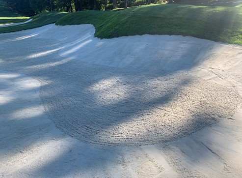

There are only a few good months for golf here in Wisconsin, so I'm trying to make the most of them. I've been going with friends to a local course called The Glen and have been having a blast.
Getting Serious
I enjoyed it so much that I decided to buy my own set of vintage Wilson clubs. Having my own gear has made a huge difference, and I think it's already paying off. Last time I was out, I got my first ever birdie, which was an awesome moment!
Next on the List
While I love The Glen, I want to explore more of the public courses around the city before the season ends. Here are the next few places I plan to play:
- The Bridges Golf Course
- Monona Golf Course
- Yahara Hills Golf Course